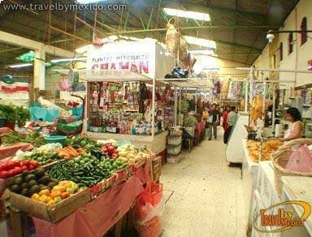
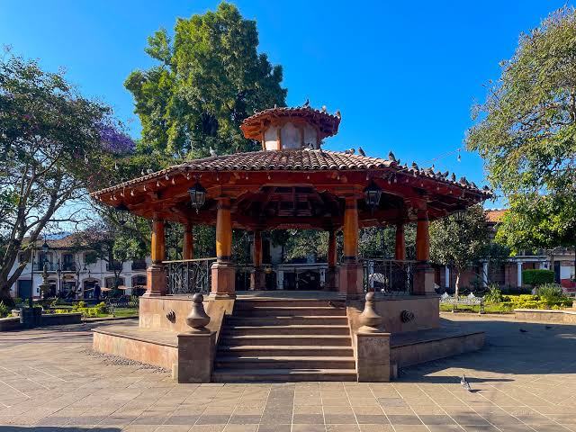

PARROQUIA SAN FRANCISCO DE ASIS

La Parroquia de San Francisco de Asís se erige como un pilar fundamental tanto para la comunidad local como para los visitantes. Este templo no es solo un centro de fe activa, sino también un monumento histórico y arquitectónico que atrae a creyentes y no creyentes por igual presencia imponente junto al Jardín Central la convierte en un punto de referencia ineludible y en el alma de este Pueblo Mágico.
MERCADO MUNICIPAL

Es famoso por sus desayunos y comidas tradicionales: chilaquiles, quesadillas, menús corridos y tacos de barbacoa. En la entrada (sobre la calle Independencia) se concentran los tradicionales puestos de "cecineros" donde puedes comprar la carne por kilo o sentarte a comer tacos preparados al momento. También hay venta de frutas, verduras frescas, lácteos, pan de la región y tortillas de maíz hechas a mano. Dirección: Entre las calles Miguel Hidalgo e Independencia (a una cuadra del jardín central y el centro histórico). Horario aproximado: Lunes a domingo, de 06:00 a 22:00 hrs.
KIOSCO VALLE DE BRAVO

Dirección: Calle Francisco González Bocanegra, Col. Centro, C.P. 51200, Valle de Bravo, Estado de México. Horario: Abierto las 24 horas todos los días de la semana. Ambiente y actividades: Está rodeado de jardines, bancas, árboles y arquitectura pintoresca. Los fines de semana (especialmente los domingos) suele haber música en vivo, bandas o eventos culturales en la zona. Alrededor encontrarás puestos de antojitos, esquites, artesanías locales y las tradicionales nieves artesanales de la región.